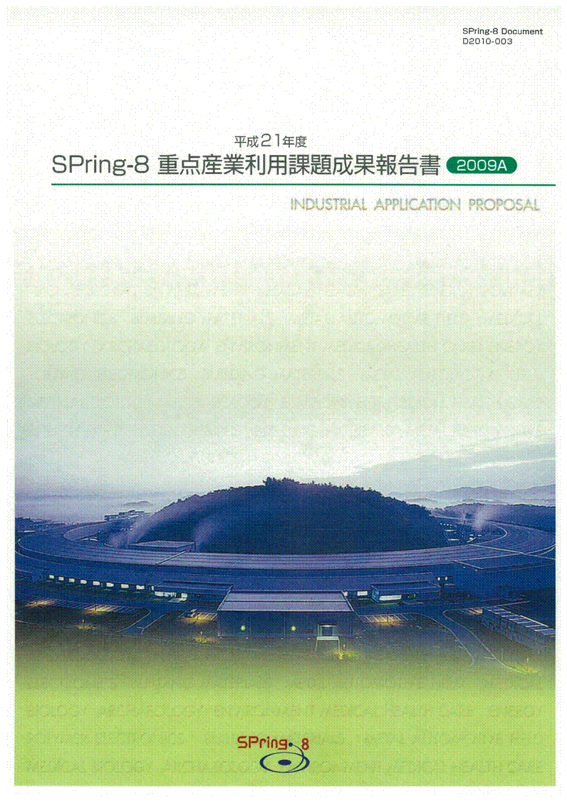
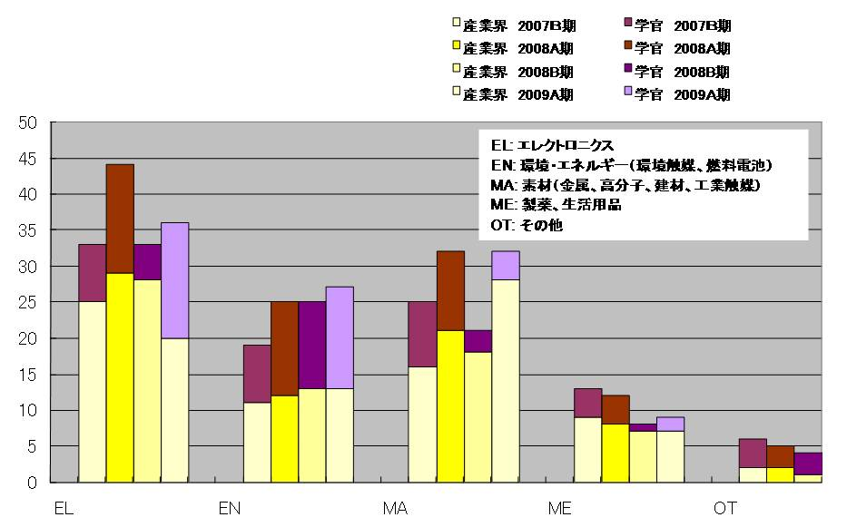
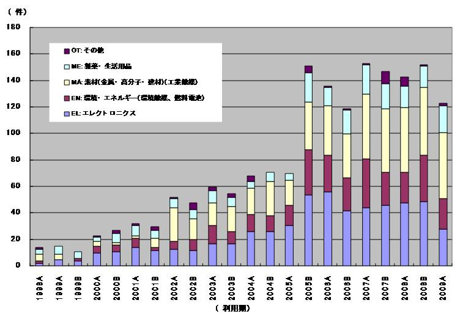
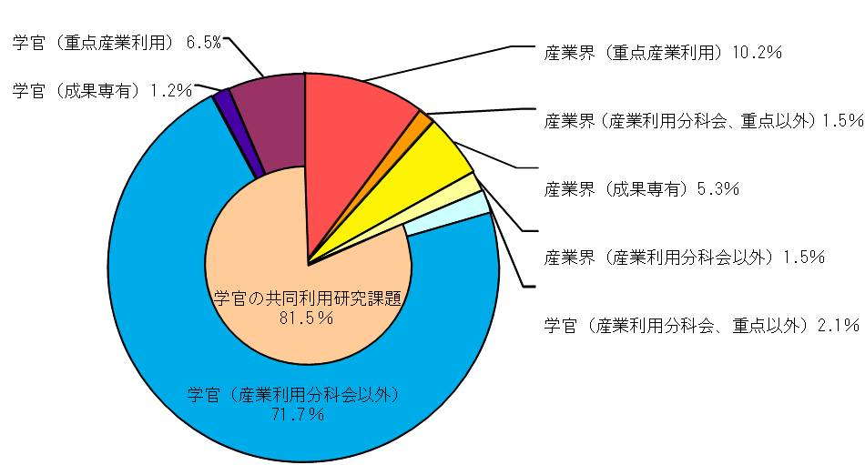
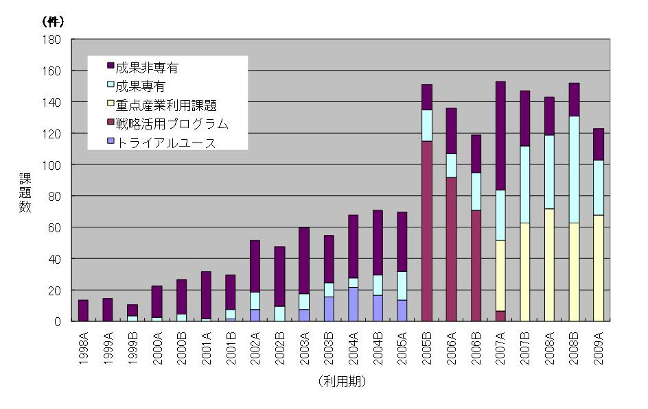
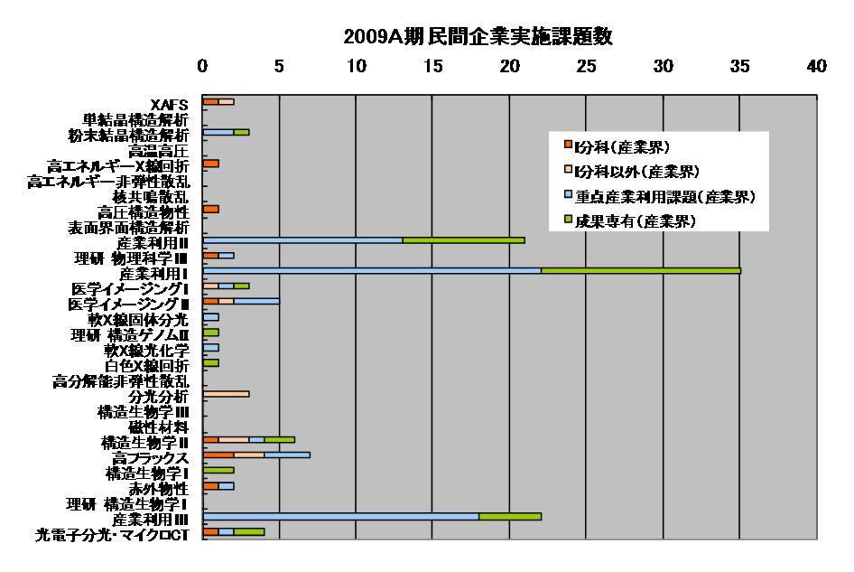

1. はじめに2. 公募の内容
3. 成果公開の考え方
4. 実施の経緯と流れ
5. 結果
6. 民間企業への波及効果と今後の課題
7. 課題利用報告書
産業界の更なる利用促進を目的に、平成17年度(2005B期)から平成18年度末まで２年間、文部科学省のプログラム として先端大型研究施設戦略活用プログラム（戦略活用プログラム）が実施された。平成19年度4月（2007A期）から は、重点産業利用課題が領域指定型の重点研究課題の一つとして承認され、戦略活用プログラムを継承する施策と して実施されている。
- 公募の分類
本プログラムで募集する課題は「新規利用者」、「新領域」、「産業基盤共通」と「先端技術開発」の 4つに分類している。
「新規利用者」とは、申請代表者が、これまで、一般課題への応募などを含め、SPring-8を利用したことのない 利用者を指している。但し、事業規模が相当程度大きく事業範囲が多岐に及ぶ企業で、これらの企業が既に利用 している場合には、既に利用している事業分野とは異なる新規分野からの新たなユーザーであれば、「新規利用者」 として認めている。
「「新領域」とは、申請者の利用経験に関係なく、これまでSPring-8で実施されたことがない産業領域、あるいは、 近年開発された新手法を用いることによって新たな展開が可能になる産業領域を指している。新領域の例示を下記に 示しているが、これ以外でも新規性が認められる研究領域であれば、新領域の対象になる。
○コンクリート等建築資材⇒三次元内部構造をX線CTによる撮影
○ヘルスケア⇒毛髪や皮膚の構造をX線回折・散乱及び透視画像で解析
○医薬品原薬⇒粉末X線回折による構造解析
○硬X線光電子分光法⇒薄膜材料の内部界面の状態解析
○環境負荷物質微量分析⇒大気・水などの重金属汚染物質の化学状態
○耐腐食構造材⇒金属材料の表層やサビの構造・状態分析
○高密度記録装置⇒DVD、HDD等の新規記録材料の薄膜構造・状態分析
「産業基盤共通」とは、それぞれの産業分野に共通する課題を解決する目的、あるいは産業利用に有効な手法の 共同開発を目的として、複数の企業を含むグループが一体となって取り組むもので、新計測技術の確立、共通課題 のデータベース化等を図る研究を指している。申請代表者が複数の企業を含むグループを取りまとめて、1つの課題 として申請して頂く。ここで言う「複数の企業」とは、それぞれ参加する企業が同等かつ独立に成果を利用できる 関係にあることを想定している。したがって、産学官連携の研究グループによる利用の場合には、学と官は「複数の企業」 としてカウントされない。
「先端技術開発」とは、ユーザーが実施するイノベーション型の技術開発課題で、成果の企業業績への貢献、 あるいは社会還元を目指した研究を指している。
- 公募の回数
BL19B2（産業利用Ⅰ）、BL14B2（産業利用Ⅱ）、BL46XU（産業利用Ⅲ）の3本のビームラインは、2007B期から各利用期 において2回に分けて課題公募を実施している(即ち、年４回に分けて課題公募を実施)。これら３本の産業利用ビーム ラインを除く共用ビームラインのうち、重点産業利用課題にビームタイムを割り当てた対象ビームラインでは、 これまで通り、2009A期の課題公募では1回である。
SPring-8を利用して得られた実験・解析結果及び成果は、以下の２つの報告書を提出してもらう。
- 利用報告書Experiment Report（英文または和文）
利用終了日から60日以内にオンライン提出。 - 重点産業利用課題報告書（原則和文）
課題採択後に利用業務部より送付される文書に記載されている締切日までに提出。 なお、提出方法は「電子データ（原則としてMSワード）」を電子メールまたは郵送で所定の宛先に提出。
上記の2009A期の報告書のうち「利用報告書Experiment Report」は2009A期終了後60日目から２週間後 にWeb上で公開される。また、「重点産業利用課題報告書」は印刷公表とする。ただし、利用者が提出 した報告書について、製品化や特許取得などの理由により公開の延期を希望する場合は、財団法人 高輝度光科学研究センターが適当と認めた場合に限り最大２年間延期することができる(２つの報告書自体は、 締切日までに必ず提出してもらう)。また、公開延期期間満了時には、公開延期理由の結果・成果の報告 をしてもらう。
- 重点領域の指定
重点産業利用課題が領域指定型の重点研究課題として、平成19年1月26日に重点領域推進委員会で 平成19年度と平成20年度の2年間指定を受けた。これより、重点産業利用課題は領域指定型の重点研究課題 （公募）として扱われている。 - 課題選定
課題の選考は、学識経験者、産業界等の有識者から構成される「利用研究課題審査委員会」 （以下「課題審査委員会」という。）により実施される。課題審査委員会は、「重点産業利用領域」 として領域指定された趣旨に照らして優秀と認められる課題を選定する。
審査は非公開で行われるが、申請課題との利害関係者は当該課題の審査から排除される。また、 各委員は委員として取得した一切の情報を委員の職にある期間だけでなくその職を退いた後も第三者 に漏洩しないこと、情報を善良な管理者の注意義務をもって管理すること等の秘密保持を遵守する ことが義務付けられている。 - 審査の手順
審査は以下の手順により実施される。- 形式審査
提出された申請書類について、応募の要件を満たしているかについて審査する。 なお、応募の要件を満たしていないものは、以降の審査の対象から除外される場合がある。 - 書類審査
課題審査委員会の下に設置する産業利用分科会により、書類審査を実施する。 - 最終審査
書類審査における評価を踏まえ、課題審査委員会において審査を実施し採択課題を決定する。
- 形式審査
- 審査の観点
審査（形式審査を除く）は、以下の観点に重点を置いて実施される。- 科学技術における先端性を有すること
- 産業利用上の成果創出に資すること
- 課題分類の趣旨に合致すること
- 研究手段としてのSPring-8の必要性
- 実験内容の技術的な実施可能性
- 実験内容の安全性
- 利用者支援
コーディネーター並びに産業利用支援グループが中心となり、課題毎に担当者をおき、 BL担当者の協力の下、全所的に利用者支援を実施している。支援の内容は、重点分野に おける実験環境の整備、コーディネーター及びスタッフによる実験企画・準備、実験実施、 実験解析に至る技術支援などからなる。 - 利用実験
平成21年4月5日～平成21年7月28日までに実施された利用実験課題である。 - 報告
平成22年11月4日～5日に開催予定の第7回SPring-8産業利用報告会において、平成21年度 2009A期の重点産業利用課題の成果報告を行う。
以下に平成21年度2009A期の重点産業利用課題の応募・採択結果についてまとめる。
- 応募・採択結果
表１ 募集時期及び研究機関別応募・採択結果
＊応募数・採択数には、一般課題に分類される下記の12条課題は除外している。募集時期 機関分類 応募数＊ 採択数＊ 採択率（%） 第1回募集 学官 35 21 60.0 産業界 68 52 76.5 第2回募集 学官 19 13 68.4 産業界 25 19 76.0
第1回：6課題（学官：不採択なし）
第2回：1課題（学官：不採択なし)
- 分類
表２ 募集時期及び研究機関別・領域別採択結果募集時期 領域分類 産業界 学官 産学官合計 第1回募集 新規利用者 11 2 13 新領域 15 3 18 産業基盤共通 1 5 6 先端技術開発 25 11 36 第2回募集 新規利用者 3 4 7 新領域 2 1 3 産業基盤共通 2 1 3 先端技術開発 12 7 19
- 利用報告書の公開日延期
2009A期で実施した課題について利用報告書公開日延期申請が提出された課題の内訳は次の通りである。
○公開日延長許可：24課題
理由内訳（複数回答有り）
a.知的財産権の取得のため：18課題
b.事業への適用のため：13課題（8課題はaと重複、1課題はa、cと重複）
c.その他の理由：4課題(3課題はaと重複、内1課題はa、bと重複)
○公開日延長不許可：なし
下記の表3は、公開日延期許可された課題を分野別に分類した結果を示す。
表3 分野別公開日延期許可課題
分野 課題件数 エレクトロニクス 7 環境・エネルギー 7 素材(金属・高分子等) 7 製薬・生活用品 3 その他 0 合計 24
- 産官学の動向
- 研究機関
本プログラムでは産業界にとって有効な利用手法の開発が産学官連携により 積極的に展開されるとの観点から、民間企業のみならず、大学等の公的部門から の応募も受け入れることにしている。2008A期に一旦は学官からの採択課題数の 割合が約4割と以前に比べ増加したものの、表１に示す通り、2008B期と同様、 学官からの採択課題数の割合が3割程度に留まり、2008A期における学官の採択 課題割合の増加は一時的なものであることが読み取れる。また、この2008A期 における学官の割合の一時的な増加は、図１(分野別分類の項で詳しく述べる) に示すエレクトロニクス分野と素材分野における学官の課題数の一時的な増加 と一致することから、この統計データを詳しく分析することで原因を掴むこと ができると思われる。またさらに、産業基盤共通など本プログラムで意図して いる産学官連携の推進という方針と合致しているかを含めて、どのような傾向 で推移するかも注視する積もりである。
- 産業基盤共通
複数の企業を含むグループが一体となって取り組む「産業基盤共通」の課題は、 表2に示す通り2009A期では合計9課題が採択され、そのうち6課題において申請 代表者が学官の研究機関である。前期と同様に、この「産業基盤共通」の課題 が産学官連携の推進の起爆剤となっているかなど、成果報告書等により課題毎 に検証する予定である。 - 分野別分類
図1は、申請代表者の申告に基づいて分類した分野別採択課題数を示している。 産学官の総計ではエレクトロニクス分野の課題が多く、次いで素材分野と環境・ エネルギー分野が続いている。また、前年の前期に当たる2008A期と比較して、 大きな違いが2つある。第一に、エレクトロニクス分野において産業界の課題数 が2008A期を境に減少傾向にあることである。このエレクトロニクス業界の課題数 の減少は、図2に示す共同利用研究実施課題全体に対する割合でも同様の傾向に あることから、①景気の影響、②企業による研究開発投資業種のシフトの2つが 考えられるが、この動向に関しては、2009年度が終了した段階で利用企業の調査 を行うことで、より明確にしたいと考えている。第二として、素材分野において 学官の課題数が減少する一方で、産業界の課題数が増加していることである。 詳しく分析する必要があるものの、昨年11月のフロンティアソフトマター開発 産学連合による専用ビームラインの稼働開始など、高分子をはじめとした素材 分野関連の企業の関心が高まり、共用ビームラインの利用においても波及して いるものと考えている。いずれにしても、エレクトロニクス分野、素材分野、 環境・エネルギー分野の3大分野ではSPring-8の利用技術が極めて有用である ことを示している。
民間企業への波及効果と今後の課題図3は2009A期において、重点産業利用課題を含む共同利用研究実施課題のうち、 実験責任者が民間企業の研究者である課題数の割合を示したものである。 図に示す通り、実験責任者が民間企業の研究者である課題数は共同利用研究 実施課題全体の18.5％の割合である。その内訳は、重点産業利用課題が10.2％、 一般課題のうち成果専有課題が5.3％である。この2つを合わせて15.5％となり、 民間企業の利用の実に80％以上が成果公開延期制度をもつ重点産業利用課題と 成果専有課題の2つの利用制度を旨く使い分けて利用していることが分かる。 図4に示す課題分類別推移においても、その傾向を良く示している。即ち、 2007年以降、重点産業利用課題あるいは成果専有課題の2つの利用制度での 実施割合が次第に増加していることが分かる。これは、本制度が民間企業 に根付いてきていることを表している。
図5は、利用技術分野別(ビームライン別)民間企業実施課題数を応募課題分類 に色分けして示したグラフである。図から明らかなように産業利用Ⅰ（BL19B2）、 産業利用Ⅱ（BL14B2）、産業利用Ⅲ（BL46XU）の3本のビームラインでは、 成果専有課題の割合が他のビームラインと比較して極端に多いことが分かる。 このことは、SPring-8の有用性が益々認識され、民間企業の実験課題が、 より事業領域に近い課題へと広がりを見せてきている証拠である。 しかしながら、前回の2008B期の重点産業利用課題成果報告書にある同様の グラフ(図4)と比較してもらうと分かる通り、3本の産業利用ビームライン における成果専有利用の課題数の割合が、2009A期において全て減少している ことが見て取れる。これは、景気の影響が次第に出てきたものであると考えられる。 成果専有利用の課題数が減少したと言え、2009A期においても特定ビームライン への課題集中による競争で課題申請しても採択されずに実施できない課題も未だ 数多くあることから、測定の効率化あるいは試料搬送の自動化など過度な競争を 緩和するあらゆる方策をタイムリーかつ迅速に進める所存である。また、未だに 潜在的な利用者として対応ができていない分析スタッフを持たない中小規模の 民間企業への対応も測定代行をはじめとした施策を広めることで新規利用者と して取り込んでいく必要があると考えている。

図1. 重点産業利用課題における分野別採択課題数

図2. 共同利用研究実施課題における民間企業の分野別実施課題数の年次推移

図3. 2009A期 共同利用研究実施課題における民間企業の実験責任者の割合

図4. 共同利用研究実施課題における民間企業の課題分類別年次推移
図5. 2009A期 利用技術分野別(ビームライン別)民間企業実施課題数
課題利用報告書この成果報告書に掲載される課題報告書は、2009A利用期に実施された課題のうち、 利用報告書公開日延期申請許可となったものは除いている。
- 研究機関